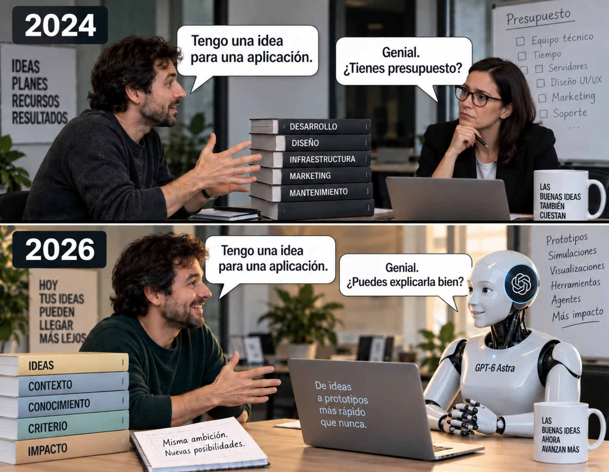

estrategIA #154 ·
De la idea al prototipo
El contexto
En 2024, la primera pregunta ante una idea era si había dinero para desarrollarla; en 2026, el meme pregunta si sabes explicarla bien. La edición sobre GPT-6 Astra mostraba nuevas posibilidades para construir prototipos con IA. La comparación destaca esa facilidad para empezar, sin afirmar que desaparezcan todos los costes del proyecto.
Publicado en: estrategIA #154 — GPT-6 Astra y la nueva frontera de la inteligencia artificial
Leer el texto de la imagen
2024 IDEAS · PLANES · RECURSOS · RESULTADOS Tengo una idea para una aplicación. Genial. ¿Tienes presupuesto? DESARROLLO · DISEÑO · INFRAESTRUCTURA · MARKETING · MANTENIMIENTO Presupuesto: Equipo técnico, Tiempo, Servidores, Diseño UI/UX, Marketing, Soporte LAS BUENAS IDEAS TAMBIÉN CUESTAN 2026 HOY TUS IDEAS PUEDEN LLEGAR MÁS LEJOS Tengo una idea para una aplicación. Genial. ¿Puedes explicarla bien? IDEAS · CONTEXTO · CONOCIMIENTO · CRITERIO · IMPACTO De ideas a prototipos más rápido que nunca. GPT-6 Astra Misma ambición. Nuevas posibilidades. Prototipos · Simulaciones · Visualizaciones · Herramientas · Agentes · Más impacto LAS BUENAS IDEAS AHORA AVANZAN MÁS